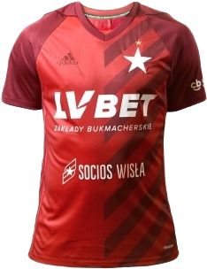
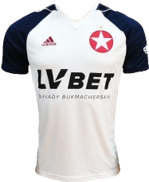
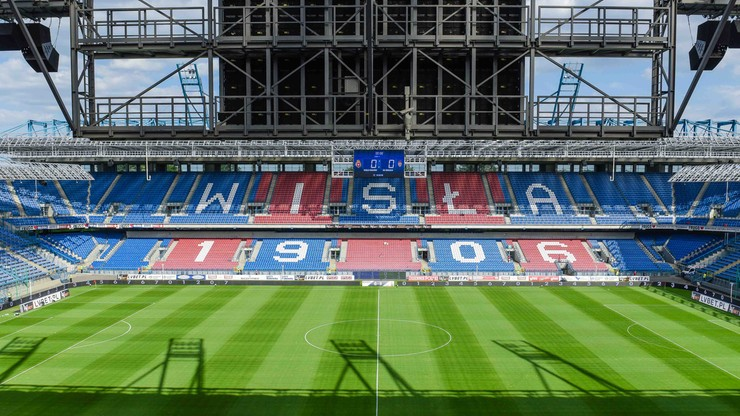

Najnowsze Informacje

WISŁA KRAKÓW


Informacje o klubie:
- Towarzystwo Sportowe Wisła Kraków
- Rok założenia: 1906
- Adres: Reymonta 22, 30-059 Kraków
- Stadion: Stadion Miejski im. Henryka Reymana - pojemność - 33 326 miejsc
- Prezes: Piotr Obidziński (od 2 lipca 2019)
- Trener: Maciej Stolarczyk (od 18 czerwca 2018)



Napastnicy
Pomocnicy
Obrońcy
Bramkarze
Fanatics Zone
ZGODY
Lazio Rzym
Ruch Chorzów (układ)
Widzew Łódź (układ)
Polonia Przemyśl (układ)
KOSY
Cracovia
Legia Warszawa
Lech Poznań
Arka Gdynia
Górnik Zabrze
Motor Lublin
Korona Kielce